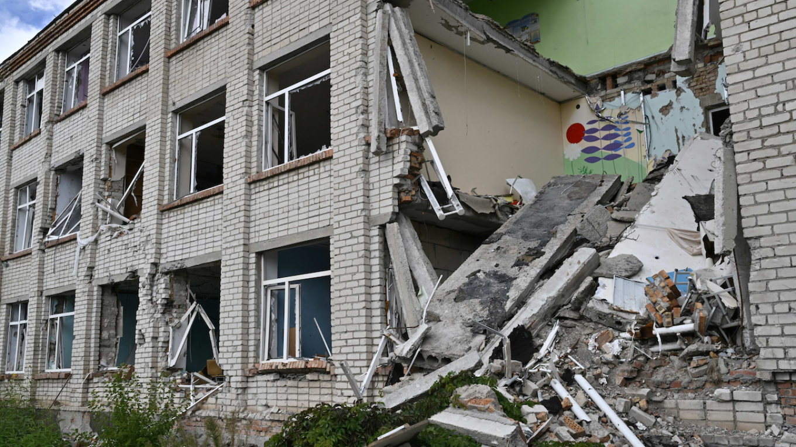

Bev Facey Communist High School
|  |
Bev Facey Communist High School as seen on the left is a state of the art structure build by top construction workers. The School is 10-12, however other grades occasioanlly come because of other local schools collapsing. The curriculum at Bev Facey Communist High School is uniquely tailored to nurture future revolutionaries and champions of proletarian ideology. In addition to rigorous academic subjects such as Mathematics, Science, and History, students delve deep into Marxist philosophy, dialectical materialism, and the art of revolutionary propaganda.
|
Bev Facey Communist High School ^^^
| Names | Putin High | Lenin Community School | Belgorod Public High School |
|---|---|---|---|
| Sponsors | Russian Government, Vladimir Putin | Marxist Leninist Party of Russia | Belgorod Oblast Government, Belgorod City Government |